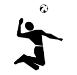
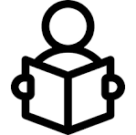

Sport
Pour maintenir l'equilibre entre le mental et le physique, j'aime faire du sport quand le temps le permet.
Depuis 2018 que je fais un peu de voleyball, même si je n'ai pas un très bon niveau, j'apprecie quand même ce sport.
Je fais aussi un peu de basketball et là je suis pire qu'au voleyball mais c'est l'intention qui compte.

Jeux
J'aime les jeux qui m'oblige à reflechir et c'est porur cette raison que ces
derniers jours j'ai commencé à jouer aux échecs et maintenant je joue un peu moins au Sudoku
mais c'est un autre jeu qui m'oblige à penser dans l'organisation des choses.
J'aime aussi d'autres jeux comme les FPS, par exemple Call of Duty Mobile.

Lecture
Je profite de mon temps libre pour faire aussi de la lecture.
Lire m’offre la possibilité de comprendre le monde sous des angles que je n’aurais pas imaginés, ce qui nourrit mon ouverture d’esprit et mon innovation.